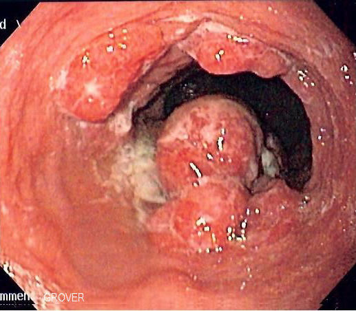

Câncer de Esôfago · 1.5
Diagnóstico do câncer de esôfago: endoscopia digestiva alta com biópsia.

Não se biopsia todo tumor. Só se biopsia a lesão que você consegue ver (olho ou câmera) e alcançar sem semear células neoplásicas no peritônio ou causar sangramento de vulto.
Lesão acessível por endoscopia, dentro do tubo digestivo, sem risco de semeadura peritoneal:
Vísceras maciças / intraperitoneais — risco de disseminação peritoneal ou sangramento:
Na prática, a punção hepática ou pancreática é realizada em cenários específicos — por exemplo, doença já irressecável/metastática, para definir terapia sistêmica, guiada por imagem. A regra acima vale para a lesão potencialmente ressecável, em que se evita a punção pelo risco de disseminação.
Em qual destes NÃO se faz biópsia diagnóstica de rotina numa lesão potencialmente ressecável?
Fígado é víscera maciça intraperitoneal: o diagnóstico é por imagem para evitar disseminação peritoneal/sangramento. Esôfago e canal anal são acessíveis e biopsiáveis.
Qual é a razão central para não biopsiar certas lesões?
A biópsia dá diagnóstico de certeza, mas em vísceras maciças intraperitoneais o acesso pode disseminar tumor ou sangrar; por isso opta-se por imagem.